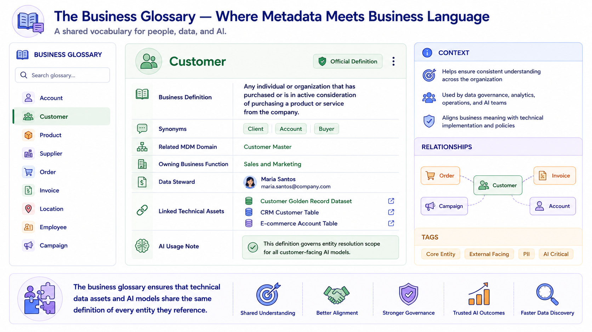
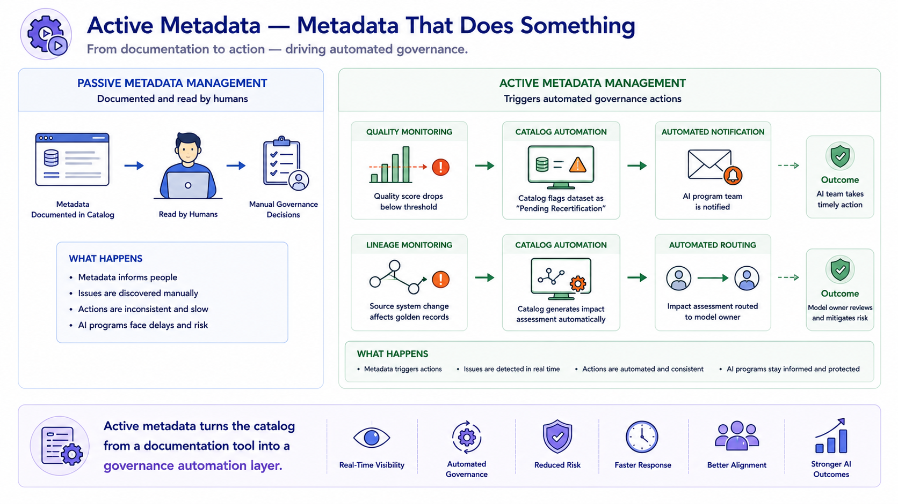
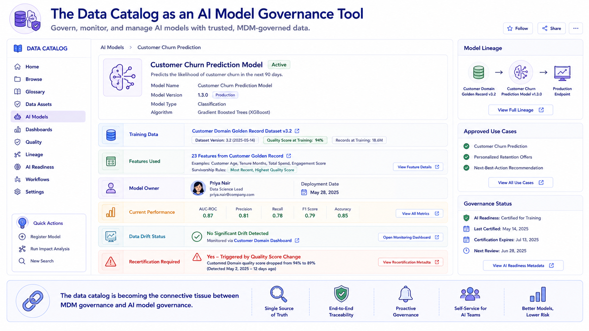
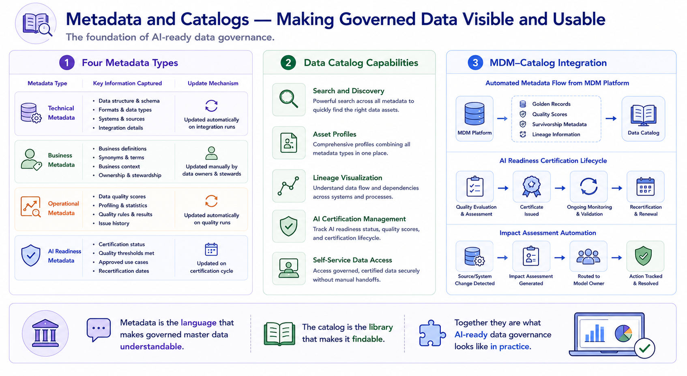

Metadata and Data Catalogs
Module support notes
The Business Glossary — Connecting Technical Data to Business Meaning
The business glossary is a foundational metadata artifact that many organizations underinvest in — and one whose absence creates persistent problems for AI programs. When a data scientist building a churn prediction model uses the term "customer" differently from the MDM platform's entity resolution scope, the model is trained on a different population than the business intends. When an AI product recommendation model uses a different definition of "active customer" from the one the sales team tracks in CRM, the model's outputs cannot be reconciled with sales performance metrics.
The business glossary creates a shared definitional layer that aligns the MDM platform, AI models, and business reporting around a common understanding of every entity the organization manages.
Note
A well-structured business glossary entry for an entity like "Customer" includes more than a definition — it links to the related MDM domain, names the owning business function and data steward, lists synonyms used across systems, and includes an AI usage note specifying how the definition governs entity resolution scope for AI models. That AI usage note is what makes the glossary actionable for data scientists, not just business analysts.

Active Metadata — From Passive Documentation to Intelligent Governance
Active metadata management represents a significant evolution in how data catalogs contribute to MDM and AI governance. Traditional catalogs are passive — they document metadata and rely on humans to consult them before making data usage decisions. Active metadata catalogs monitor the metadata they manage and trigger automated actions when conditions change.
When a quality score drops below an AI readiness threshold, the catalog automatically updates the certification status, notifies the AI program team, and flags any models currently using the affected dataset. When a source system change propagates through the MDM platform and alters golden records, the catalog automatically generates an impact assessment showing which AI models depend on the affected entities. This automation transforms data governance from a reactive, manually intensive process into a proactive, scalable capability.
Tip
When evaluating data catalog tools, ask vendors specifically about active metadata capabilities — what governance actions can the catalog trigger automatically, and what conditions can it monitor? The gap between catalogs that merely document metadata and those that act on it is significant, and the latter are what organizations with growing AI portfolios actually need.

Data Catalogs and AI Model Governance
As AI governance frameworks mature, the data catalog is emerging as the system of record that connects data governance to model governance. An AI model registry entry in the catalog links every model to the specific training data versions it was built on, the MDM quality scores that data carried at training time, the survivorship rules that produced its feature values, and the current monitoring status of the master data domains it depends on.
When quality monitoring detects data drift in a domain that feeds a production model, the catalog can surface that connection immediately — enabling the AI governance process to assess whether the drift is significant enough to require model retraining, without requiring anyone to manually investigate the relationship between the quality event and the affected model.
Warning
Organizations that keep their MDM platform, data catalog, and AI model registry as separate, unconnected tools create a governance blind spot — data quality events in MDM will not automatically surface in AI model monitoring, and AI governance reviews will not have visibility into the data quality status of the domains feeding production models. The cost of that blind spot grows with every AI model deployed.

Metadata is the language that makes governed master data understandable. The catalog is the library that makes it findable. Together they are what AI-ready data governance looks like in practice.
